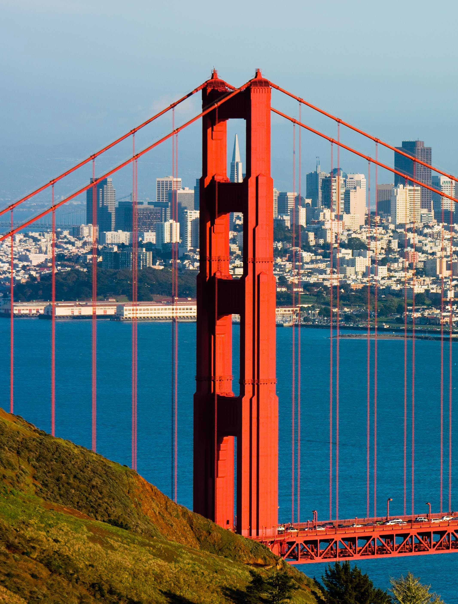
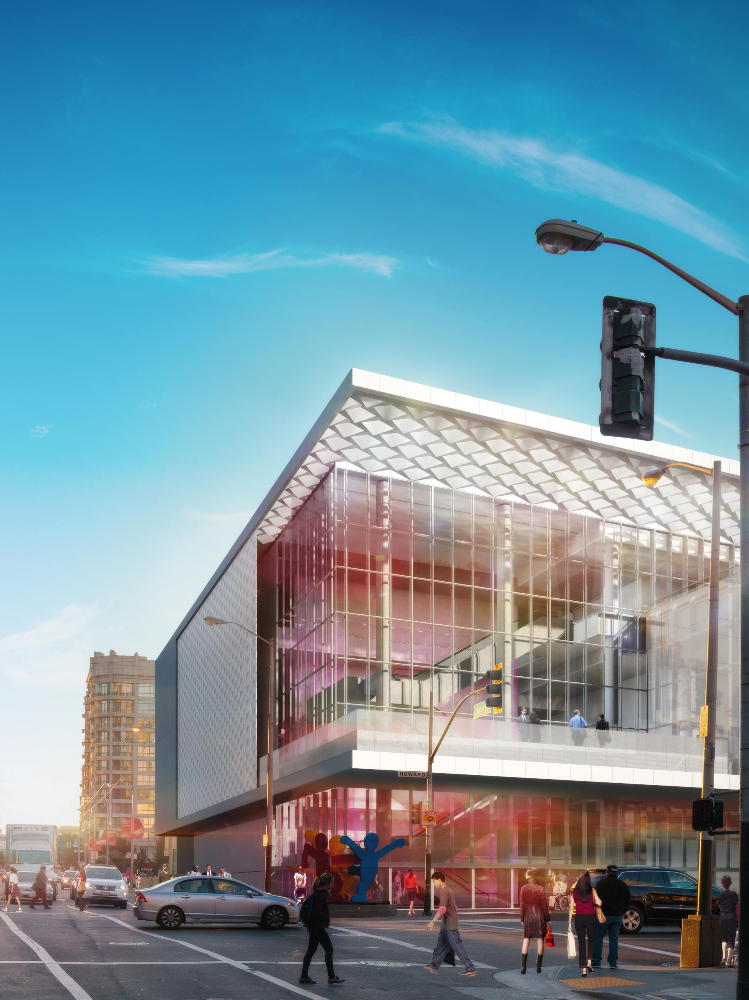
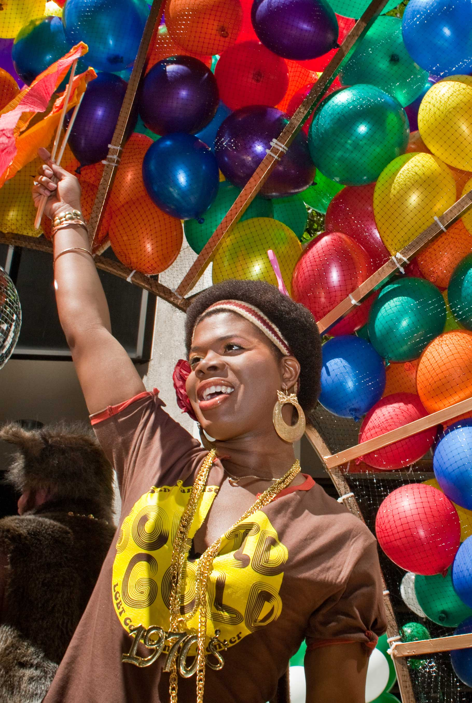
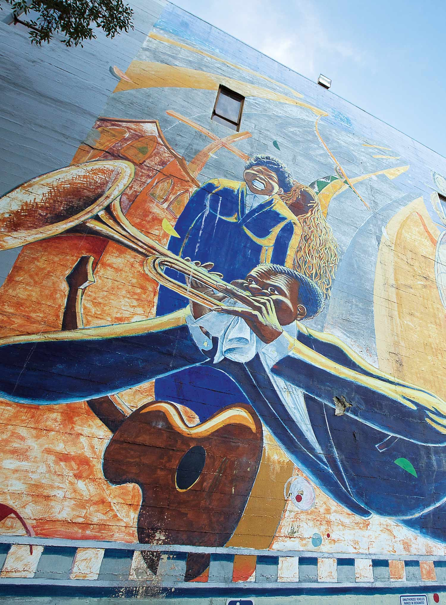
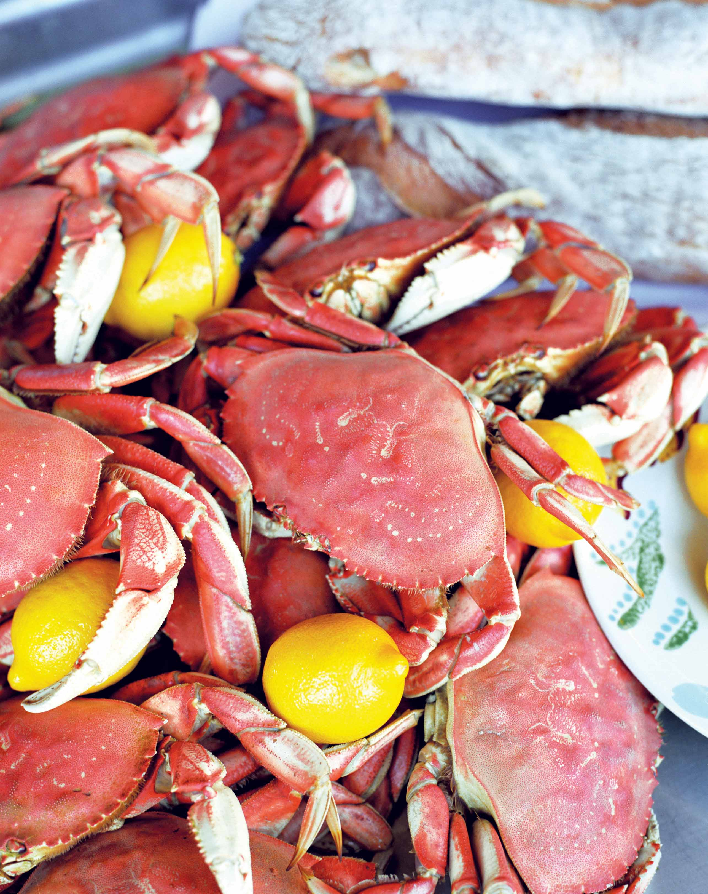
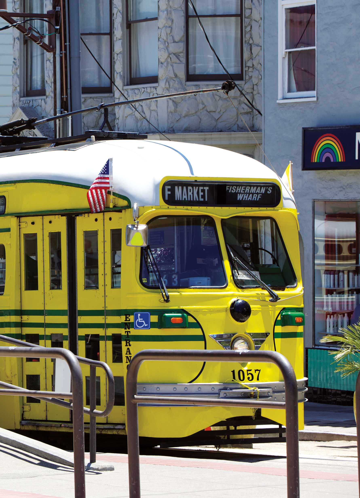

<!DOCTYPE html>
<html>
  <head>
    <meta charset="utf-8">
    <meta http-equiv="X-UA-Compatible" content="IE=edge">
    <title>SF Travel Annual Report 2016</title>
    <meta name="description" content="The Annual Report for SF Travel">
    <meta name="viewport" content="width=device-width, initial-scale=1">

    <!-- CSS -->
    <link rel="stylesheet" href="styles/css/content.css" media="screen" title="no title" charset="utf-8">
    <link rel="stylesheet" href="styles/css/animate.css">

    <!-- JS -->
    <script   src="https://code.jquery.com/jquery-3.0.0.min.js"   integrity="sha256-JmvOoLtYsmqlsWxa7mDSLMwa6dZ9rrIdtrrVYRnDRH0="   crossorigin="anonymous"></script>
    <script src="js/jquery.waypoints.min.js"></script>


  </head>
  <body>

    <div class="main">

      <div class="side-menu-wrapper">
        
        <ul>
          <a href="index.html"><li>Home</li></a>
        </ul>
      </div>

      <div id="left-container" class="wrapper wrapper-left">
        <div id="left-container__first-page" class="left left1 page">
          <div class="left__text">
            
            <p>
              For some, San Francisco is defined by the Golden Gate Bridge and the cable cars.  For all of us at San Francisco Travel, our city is so much more. We believe San Francisco’s greatest strengths are embodied in these five key themes. As we interact with our various audiences, it is these key themes that inform the creation and focus of our strategies.
            </p>
          </div>
        </div>
        <div id="left-container__second-page" class="left left2 page">
          <div class="left__text">
            
            <h3>Always Evolving</h3>
            <p>
              For some, San Francisco is defined by the Golden Gate Bridge and the cable cars.  For all of us at San Francisco Travel, our city is so much more. We believe San Francisco’s greatest strengths are embodied in these five key themes. As we interact with our various audiences, it is these key themes that inform the creation and focus of our strategies.
            </p>
          </div>
        </div>
        <div id="left-container__third-page" class="left left3 page">
          <div class="left__text">
            
            <h3>Diversity</h3>
            <p>
              Throughout its history, San Francisco has attracted and welcomed a multitude of communities of diverse social, cultural and ethnic backgrounds. This rich history of inclusion and celebration is one of the most attractive selling points of our city.  It is evident in the city’s kaleidoscope of neighborhoods, which attract visitors from around the world with a variety of different tastes, interests and expectations.  The city also has a proud history of supporting its various communities, most famously as a leader in the fight for LGBT equality.  San Francisco Travel has promoted the city to LGBT travelers for many decades.
            </p>
          </div>
        </div>
        <div id="left-container__fourth-page" class="left left4 page">
          <div class="left__text">
            
            <h3>Arts & Culture</h3>
            <p>
              San Francisco is world-renowned for its opera, symphony, ballet, museums, theater companies and galleries.  As a city of innovation, San Francisco is building on its status as a destination for traditional arts and culture and blazing a trail toward the creative expression of tomorrow.  Technology is no longer confined to the business world, and art is no longer locked up behind glass.  Installations like The Bay Lights, the world’s largest LED light sculpture, show what’s possible in creating new, unexpected and celebrated public art.  With cultural tourism being the driving force for 20% of tourism’s overall economic impact, San Francisco Travel remains committed to building partnerships with local cultural influencers to activate neighborhoods and encourage even more visitors to experience the creative side of our city.
            </p>
          </div>
        </div>
        <div id="left-container__fifth-page" class="left left5 page">
          <div class="left__text">
            
            <h3>Food & Wine</h3>
            <p>
              Food is now the leading hook in travel, and it’s a part of the visitor experience that’s important to all travelers. Culinary travelers, defined as those who travel primarily for unique and memorable eating or drinking experiences, are reshaping the way destinations market themselves. Compared to the average leisure traveler, wine and culinary travelers are more affluent, better educated, and take part in more activities while traveling, making this a large, active and lucrative market. Known as a mecca for “foodies,” San Francisco is uniquely positioned to attract this audience and San Francisco Travel
              markets the city and the region as a required destination for culinary travelers.
            </p>
          </div>
        </div>
        <div id="left-container__sixth-page" class="left left6 page">
          <div class="left__text">
            
            <h3>Sustainable Travel</h3>
            <p>
              San Francisco is known as a city on the cutting edge of the environmental movement and we were leading the country well before green became the new black. Whether banning plastic shopping bags, hanging eco-friendly and non-toxic street banners or diverting nearly 2.5 million pounds of materials from landfills each year at The Moscone Center, the collective commitment to sustainability by the City and by businesses makes San Francisco an attractive destination for leisure travelers who are concerned with green issues and to convention organizers who are looking to minimize the impact of their events on the local environment.  And we’re committed to that goal ourselves.  This past year, San Francisco Travel was certified by San Francisco Green Business as one of the most environmentally friendly workplaces in the city.
            </p>
          </div>
        </div>
      </div>


      <div id="right-container" class="wrapper wrapper-right">
          <div id="right-container__first-image" class="right">
            <div class="right__gradient"></div>
            <div class="photo right1-img"></div>
            
          </div>
          <div id="right-container__second-image" class="right">
            <div class="right__gradient"></div>
            <div class="photo right2-img"></div>
          </div>
          <div id="right-container__third-image" class="right">
            <div class="right__gradient"></div>
            <div class="photo right3-img"></div>
          </div>
          <div id="right-container__fourth-image" class="right">
            <div class="right__gradient"></div>
            <div class="photo right4-img"></div>
          </div>
          <div id="right-container__fifth-image" class="right">
            <div class="right__gradient"></div>
            <div class="photo right5-img"></div>
          </div>
          <div id="right-container__sixth-image" class="right">
            <div class="right__gradient"></div>
            <div class="photo right6-img"></div>
          </div>
        </div>
      </div>


    <script>

    /*
    Foreach content block
      - attach a Waypoint handler
        - define the element
        - remove all 'active' classes from images
        - add 'active' class to current Waypoint element

    Content block styles
    - z-index to set up visibility to reflect order
    - on default ID styling

    */

      var waypoint = new Waypoint({
          element: $("#left-container__first-page"),
          handler: function() {
            $('#right-container__second-image').toggleClass('active');
          }
          //offset: '70%'
          });

      var waypoint = new Waypoint({
          element: $("#left-container__second-page"),
          handler: function() {
            $('#right-container__third-image').toggleClass('active');
          }
          });

      var waypoint = new Waypoint({
          element: $("#left-container__third-page"),
          handler: function() {
            $('#right-container__fourth-image').toggleClass('active');
          }
          });

      var waypoint = new Waypoint({
          element: $("#left-container__fourth-page"),
          handler: function() {
            $('#right-container__fifth-image').toggleClass('active');
          }
          });

      var waypoint = new Waypoint({
          element: $("#left-container__fifth-page"),
          handler: function() {
            $('#right-container__sixth-image').toggleClass('active');
          }
          });


    </script>

  </body>
</html>
